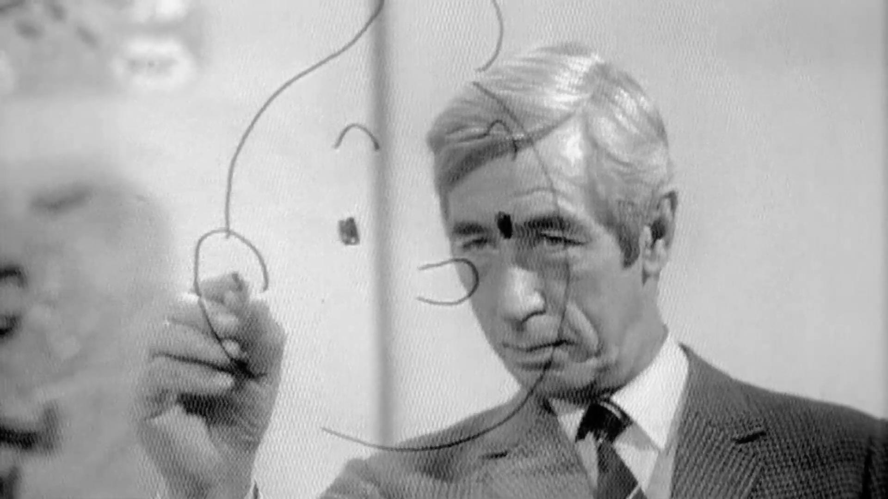

Hergé
Curieux de tout ce qui fait son siècle, Hergé en a collecté les images et les signes mythiques et historiques. Par son art du dessin et sa science de la narration, il a donné à la bande dessinée européenne ses lettres de noblesse.

Tintin © Hergé / Moulinsart
Le commencement
Au début des années 1960 Hergé connaît le succès. La vente des albums Tintin dépasse alors 10 millions d'exemplaires dans le monde. Le 27 juin 1962, à l'occasion de la Semaine Canada-Belgique, Radio-Canada présente un entretien de Judith Jasmin avec Hergé, enregistré dans le jardin de sa résidence à Ceroux-Mousty. L'auteur parle de ses débuts en dessin, de l'intérêt des enfants pour Tintin et des traductions de la bande dessinée :
Dates clés
| De 1907 - 1983 |
| 1907 - Naissance de Georges Remi à Etterbeek en Belgique, le 22 mai.
|
1920 - Le jeune garçon entame ses études secondaires au collège Saint -Boniface, à Bruxelles. Il s'y ennuie profondément.
|
| 1921 - Il entre dans la troupe scoute du collège, où il recevra le nom totémique de Renard curieux. Ses premiers dessins paraissent dans "Jamais assez", la revue scoute de l'établissement scolaire puis, à partir de 1923, dans “Le Boy-Scout belge”, le mensuel des scouts de Belgique.
|
1924 - C'est du nom de Hergé - RG, les initiales de Georges Remi - qu'il signe désormais ses illustrations.
|
| 1926 - Création de Totor CP des Hannetons, préfiguration de Tintin, dans Le Boy-Scout belge. À 19 ans, Georges Remi se porte volontaire pour faire son service militaire. Il est candidat sous-lieutenant de réserve au premier régiment de chasseurs à pied, à la caserne de la place Dailly, à Schaerbeek. Il garde toujours sur lui un petit carnet dans lequel il croque ses compagnons. Il est démobilisé au bout de douze mois avec le grade de sergent de réserve.
|
1928 - De retour à Bruxelles, Hergé est nommé rédacteur en chef du Petit Vingtième, le supplément hebdomadaire pour la jeunesse du Vingtième Siècle. Le premier numéro paraît le 1er novembre.
|
| 1929 - Le 10 janvier, "naissance" de Tintin et Milou dans Le Petit Vingtième.
|
| 1930 - Création de Quick et Flupke, gamins de Bruxelles et acteurs de courtes histoires complètes dans Le Petit Vingtième. Publication du premier album de Tintin : Tintin au pays des Soviets.
|
1932 - Georges Remi épouse Germaine Kieckens, secrétaire du directeur du Vingtième Siècle.
|
| 1946 - Parution, le 26 septembre, du premier numéro du magazine Tintin, un nouvel hebdomadaire créé pour la jeunesse par un ancien résistant, Raymond Leblanc.
|
1950 - Ayant entrepris On a marché sur la Lune, épisode qui nécessite un travail technique important, une grande rigueur documentaire et une attention particulière, Hergé s'entoure de collaborateurs et fonde les Studios Hergé.
|
| 1938 - L'Île Noire |
1934 - La Maison Casterman, sise à Tournai (Belgique) devient l'éditeur des Aventures de Tintin. La rencontre d'un jeune étudiant chinois, Tchang Tchong-jen, marque un tournant décisif. Hergé se persuade de l'importance d'un scénario solidement construit et de la nécessité de se documenter. Il commence à prendre au sérieux ce qui n'était jusqu'alors qu'un simple jeu...
|
| 1935 - Pour l'hebdomadaire français, Coeurs Vaillants, Hergé crée une nouvelle série et de nouveaux héros : Jo, Zette et Jocko.
|
| 1939 - Pour l'hebdomadaire français, Coeurs Vaillants, Hergé crée une nouvelle série et de nouveaux héros : Jo, Zette et Jocko.
| 1940 - Le 10 mai, la Belgique est envahie par les troupes allemandes. Le Vingtième Siècle et Le Petit Vingtième disparaissent. Tintin au pays de l'or noir, l'épisode en cours de publication, s'interrompt pour huit ans. Hergé en entreprend un autre, Le Crabe aux pinces d'or, qu'il fait paraître dans Le Soir, l'un des seuls journaux autorisé à paraître.
|
| 1942 - L'éditeur Casterman, qui envisage de publier désormais des albums de 64 pages et en couleurs, obtient d'Hergé qu'il adapte progressivement les épisodes déjà parus à ces nouvelles contraintes.
| 1944 - La libération de la Belgique, le 3 septembre, met un terme à la publication des Aventures de Tintin dans Le Soir. Certains considèrent alors qu'ayant publié dans un journal contrôlé par l'occupant allemand, Hergé a "collaboré" avec celui-ci.
|
| 1945 - Le dessinateur poursuit l'important travail de ses premiers albums, qui seront publiés l'un après l'autre selon les nouvelles normes.
| 1976 - Tintin et les Picaros
|
| 1944 - Le Trésor de Rackham le Rouge
| 1946 - Parution, le 26 septembre, du premier numéro du magazine Tintin, un nouvel hebdomadaire créé pour la jeunesse par un ancien résistant, Raymond Leblanc.
|
| 1955 - Tintin, dont les albums ont de plus en plus de succès, est à ce point populaire que la publicité s'intéresse à lui. Hergé développe dans le même temps une collection de chromos au sein de laquelle Tintin joue le rôle de présentateur dans différents domaines du savoir.
|
1958 - L'épisode Tintin au Tibet est mené à son terme en dépit de la crise personnelle vécue par Hergé.
|
| 1960 - Tintin fait du cinéma et c'est le jeune Belge Jean-Pierre Talbot qui l'incarne au grand écran dans Tintin et le mystère de la "Toison d'Or". L'acteur récidivera en 1964, dans Tintin et les oranges bleues. Georges Remi découvre l'art contemporain, qui devient une véritable passion. Il se sépare de son épouse.
|
1969 - Les studios Belvision de Bruxelles produisent un dessin animé de long métrage à partir de l'album Le Temple du Soleil.
|
| 1971 - Lors d'un premier voyage aux États-Unis. Hergé rencontre des Peaux-Rouges.
|
1973 - Les éditions Casterman publient un premier volume des Archives Hergé. Le mythique Tintin, reporter du Petit Vingtième au pays des Soviets, reparaît ainsi, plus de quarante ans après qu'il fut devenu introuvable. Hergé visite Taiwan, trente-cinq ans après l'invitation officielle qui lui a été faite.
|
| 1976 - Sortie sur les écrans de Moi, Tintin, un documentaire de long métrage consacré au héros et à son créateur. Le 29 septembre, inauguration de la statue en bronze de Tintin et Milou, à Bruxelles.
|
1977 - Le divorce avec sa première épouse ayant été prononcé, Georges Remi épouse Fanny Vlamynck.
L’Américain Andy Warhol, chef de file du Pop Art, fait une série de quatre portrait d’Hergé. Les cinquante ans d’existence de Tintin sont commémorés un peu partout.
|
| 1981 -Retrouvailles émues entre Hergé et Tchang Tchong-jen, l’ami chinois qui avait inspiré Le Lotus bleu quarante-cinq ans plus tôt.
|
1982 -Pour fêter le soixante-quinzième anniversaire d’Hergé, la Société belge d’Astronomie donne son nom à une planète récemment découverte. La planète Hergé est située entre Mars et Jupiter.
|
| 1983- Le 3 mars, mort de Georges Remi, dit Hergé.
|